Logic and Proof
19 Elementary Number Theory
In the last two chapters, we saw that the natural numbers are
characterized by the fact that they support proof by induction and
definition by recursion. Moreover, with these components, we can
actually define  ,
,  , and
, and  in a suitable axiomatic
foundation, and prove that they have the relevant properties. In
Section 17.1 we also discussed the integers, which include negative
numbers and support the operation of subtraction.
in a suitable axiomatic
foundation, and prove that they have the relevant properties. In
Section 17.1 we also discussed the integers, which include negative
numbers and support the operation of subtraction.
The natural numbers and the integers are the central components of number theory, a branch of mathematics dating back to the ancients. In this chapter, we will discuss some of the rudiments of this subject.
19.1 The Quotient-Remainder Theorem
A key property of the integers that we will use here is the quotient-remainder theorem:
Theorem. Let  and
and  be integers with
be integers with  . Then there
are integers
. Then there
are integers  and
and  satisfying and .
satisfying and .
Proof. First we prove this in the case where is a natural
number, in which case use complete induction on . Let be any
natural number. If  , then we can take and , and
we indeed have and . Otherwise, we have . In this case is a natural number smaller than . By
induction hypothesis, we know that we can find and such that
and . Then we can choose 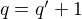 and , and we obtain and , as
desired.
, then we can take and , and
we indeed have and . Otherwise, we have . In this case is a natural number smaller than . By
induction hypothesis, we know that we can find and such that
and . Then we can choose 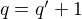 and , and we obtain and , as
desired.
If is negative, then is a natural number, hence we can
use the previous part for to obtain and such that
and . Now let and
. Then we can compute
Also, since we have and since we have . This completes the proof.
Intuitively, is the integer quotient when you divide by
and is the remainder. Remember that using the word "the"
presupposes that there are unique values meeting that
description. That is, in fact, the case:
Proposition. If and are as above, and 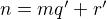 with both and less than , then and  .
.
Proof. By assumption, we have . It suffices to show that , because then , and hence .
Suppose . Then either or . Suppose without loss of generality that . (The other case is symmetric.) Then , so we can subtract from both sides of the equality to obtain But since , we have , which means which contradicts the fact that .
19.2 Divisibility
We can define divisibility on the integers as follows.
Definition. Given two integers and , we say that is a
divisor of , written  , if there exists some integer
, if there exists some integer  such that . We also say that is divisible by
or that divides . We write to say that is
not a divisor of .
such that . We also say that is divisible by
or that divides . We write to say that is
not a divisor of .
We can now prove the following:
Theorem. The relation is reflexive and transitive. Also, if
and , then . This means that
restricted to the natural numbers, this relation is a partial order.
Proof. Reflexivity is immediate, because , hence .
For transitivity, suppose and . Then there are 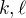 such that and . Now we compute
Suppose that and are integers such that  and . Then there exist and
and . Then there exist and  such that and . We distinguish two cases. If
such that and . We distinguish two cases. If  , then we have , so we are done. If
, then we have , so we are done. If  , then we use the
the equations to get , and we
can cancel on both sides to get . We conclude
that 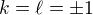, hence we get .
, then we use the
the equations to get , and we
can cancel on both sides to get . We conclude
that 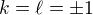, hence we get .
Note that this means that if and are both natural numbers,
then , which means that is antisymmetric, and hence a
partial order, on the natural numbers.
See Exercise 1 for some basic properties of divisibility.
An integer is even if it is divisible by  , in other words,
is even if . An integer is odd if it is not
even. Of course, odd numbers are of the form for some , and
we can prove this now.
, in other words,
is even if . An integer is odd if it is not
even. Of course, odd numbers are of the form for some , and
we can prove this now.
Theorem. If is an odd integer, then  for some integer .
for some integer .
Proof. By the quotient-remainder theorem, we can write
for some integers and with . The last condition
means that or . In the first case, we have ,
hence , contradicting that is odd. So we have ,
which means that .
Theorem. Every sequence of consecutive numbers contains a number
divisible by .
Proof. Denote the largest number of the sequence by . This means
that the sequence is . By the
quotient-remainder theorem, we have for some integers
and with . From these inequalities we conclude
that is in our sequence, and , hence divisible by
.
Definition. Given two integers and such that either  or , we define the greatest common divisor
of and to be the largest integer
or , we define the greatest common divisor
of and to be the largest integer  which is both a divisor
of and , that is and .
which is both a divisor
of and , that is and .
This largest integer exists, because there is at least one common divisor, but only finitely many. There is at least one, since 1 is a common divisor of any two integers, and there are finitely many, since a nonzero number has only finitely many divisors.
If  , then we define .
, then we define .
The greatest common divisor of two numbers is always a natural number, since 1 is always a common divisor of two numbers. As an example, let us compute the greatest common divisor of 6 and 28. The positive divisors of 6 are and the positive divisors of 28 are . The largest number in both these sets is 2, which is the greatest common divisor of 6 and 28.
However, computing the greatest common divisor of two numbers by listing all the divisors of both numbers is a lot of work, so we will now consider a method to compute the greatest common divisor more efficiently.
Lemma. For all integers , and we have
.
Proof. Let  and . If , then , and we're done.
and . If , then , and we're done.
In the other case we first show that the set of common divisors of
and is the same as the set of the common divisors of and
. To see this, let and . Then also  by Exercise 1 below. Hence is a common divisor of
and . On the other hand, if is a divisor of and , then
, hence , hence is a common divisor
of and .
by Exercise 1 below. Hence is a common divisor of
and . On the other hand, if is a divisor of and , then
, hence , hence is a common divisor
of and .
Since the sets of common divisors are the same, the largest element in each set is also the same, hence .
Lemma. For all integers we have .
Proof. Every number is a divisor of 0, hence the greatest common
divisor of and 0 is just the greatest divisor of , which is
the absolute value of .
These two lemmas give us a quick way to compute the greatest common divisor of two numbers. This is called the Euclidean Algorithm. Suppose we want to compute .
- We let and
 .
. - Given
 and we compute as the remainder of
of when divided by .
and we compute as the remainder of
of when divided by . - Once , we stop, and .
This works, because by the lemmas above, we have , since for some
. Hence if  we have
we have

For example, suppose we want to compute the greatest common divisor of 1311 and 5757. We compute the following remainders:
Hence . This is much quicker than computing all the divisors of both 1311 and 5757.
Here is an important result about greatest common divisors. It is only called a "lemma" for historical reasons.
Theorem (Bézout's Lemma). Let and  be integers. Then there
are integers
be integers. Then there
are integers  and such that .
and such that .
Proof. We compute by the Euclidean Algorithm given
above, and during the algorithm we get the intermediate values where . Now by induction on we prove
that we can write 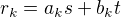 for some integers and
. Indeed: and . Now if we assume that and , we know that ,
where is the quotient of when divided by . These
equations together give
This completes the induction. In particular, , and since we can write
as for some and .
Corollary. If  is any common divisor of and , then 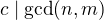.
is any common divisor of and , then 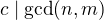.
Proof. By Bézout's Lemma, there are and such that
. Since divides both and , divides
by Exercise 1 below, and hence also .
Of special interest are pairs of integers which have no divisors in common, except 1 and .
Definition. Two integers and are coprime if .
Proposition. Let , and be integers such that and
are coprime. If then
Proof. By Bézout's Lemma, there are and such that . Multiplying by gives Since divides ,
divides the left-hand side of the equation, hence .
19.3 Prime Numbers
In this section we consider properties of prime numbers.
Definition. An integer is called prime if the only
positive divisors of  are 1 and . An integer which
is not prime is called composite.
are 1 and . An integer which
is not prime is called composite.
An equivalent definition of a prime number is a positive number with exactly 2 positive divisors.
Recall from Chapter 17 that every natural number greater than 1 can be written as the product of primes. In particular, ever natural number greater than 1 is divisible by some prime number.
We now prove some other properties about prime numbers.
Theorem. There are infinitely many primes.
Proof. Suppose for the sake of contradiction that there are only
finitely many primes . Let . Since is divisible by
for all 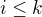 we know that  is not divisible by for
any
is not divisible by for
any  . However, we assumed that these are all primes, contradicting the
fact that every number is divisible by a prime number.
. However, we assumed that these are all primes, contradicting the
fact that every number is divisible by a prime number.
Lemma. If is an integer and is a prime number, then either
and are coprime or .
Proof. Let . Since is a positive divisor of
, either  or . In the first case, and are
coprime by definition, and in the second case we have .
or . In the first case, and are
coprime by definition, and in the second case we have .
Proposition. If and are integers and is a prime number such
that then either or .
Proof. Suppose that . By the previous Lemma, this means
that and are coprime. From this we can conclude that .
The last result in this section captures that the primes are the "building blocks" of the positive integers for multiplication: all other integers can be written as a product of primes in an essentially unique way.
Theorem (Fundamental Theorem of Arithmetic). Let be an integer. Then there are primes such that . Moreover, these primes are unique up to reordering. That means that if there are prime numbers such that , then the are a reordering of the . To be completely precise, this means that there is a bijection such that .
Remark. 1 can be written as the product of zero prime numbers. The empty product is defined to be 1.
Proof. We have already seen that every number can be written as the
product of primes, so we only need to prove the uniqueness up to
reordering. Suppose this is not true, and by the least element
principle, let be the smallest positive integers such that can
be written as the product of primes in two ways: 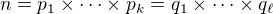.
Since 1 can be written as product of primes only as empty product,
we have , hence  . Since is prime, we must have
for some
. Since is prime, we must have
for some  . By swapping and ,
we may assume that . Since is also prime, we have
.
. By swapping and ,
we may assume that . Since is also prime, we have
.
Now we have . This product is smaller than , but can
be written as product of primes in two different ways. But we assumed
was the smallest such number. Contradiction!
19.4 Modular Arithmetic
In the discussion of equivalence relations in Section 13.3 we considered the example of the relation of modular equivalence on the integers. This is sometimes thought of as "clock arithmetic." Suppose you have a 12-hour clock without a minute hand, so it only has an hour hand which can point to the hours 12, 1, 2, 3, 4, 5, 6, 7, 8, 9, 10, 11 and then it wraps to 12 again. We can do arithmetic with this clock.
- If the hand currently points to 10, then 5 hours later it will point to 3.
- If the hand points to 7, then 23 hours before that, it pointed to 8.
- If the hand points to 9, and we work for a 8 hours, then when we are done the hand will point to 5. If we worked twice as long, starting at 9, the hand will point to 1.
We want to write these statements using mathematical notation, so that we can reason about them more easily. We cannot write for the first expression, because that would be false, so instead we use the notation . The notation indicates that we forget about multiples of 12, and we use the "congruence" symbol with three horizontal lines to remind us that these values are not exactly equal, but only equal up to multiples of 12. The other two lines can be formulated as and .
Here are some more examples:
- 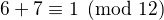
The last example shows that we can use negative numbers as well.
We now give a precise definition.
Definition. For integers , and we say that and
are congruent modulo if . This is written . The number is called the modulus.
Typically we only use this definition when the modulus is
positive.
Theorem. Congruence modulo is an equivalence relation.
Proof. We have to show that congruence modulo is reflexive,
symmetric and transitive.
It is reflexive, because , so , and hence 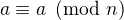.
To show that it is symmetric, suppose that  . Then
by definition, . So 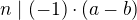, which
means that . This means by definition that .
. Then
by definition, . So 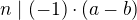, which
means that . This means by definition that .
To show that it is transitive, suppose that and
. Then we have and . Hence we have which means that . So .
This theorem justifies the "chaining" notation we used above when we wrote . Since congruence modulo 12 is transitive, we can now actually conclude that .
Theorem. Suppose that  and . Then
and . Then  and 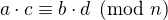.
and 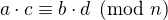.
Moreover, if then  for
all natural numbers .
for
all natural numbers .
Proof. We know that and . For the first statement, we can calculate that , so we can conclude that hence that .
For the second statement, we want to show that . We can factor 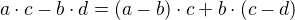. Now divides both summands on the right, hence
divides , which means that .
The last statement follows by induction on . If  , then
, and for the induction step, suppose that
, then we have
, then
, and for the induction step, suppose that
, then we have
This theorem is useful for carrying out computations modulo . Here
are some examples.
- Suppose we want to compute modulo 12. We know that and , so 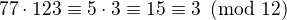
- Suppose we want to compute modulo 10. We know that and , hence .
- Suppose we want to know the last digit of . Notice that
the last digit of a number is congruent to modulo 10, so we
can just compute . So
the last digit of is 1.
Warning. You cannot do all computations you might expect with modular arithmetic:
- You are not allowed to divide congruent numbers in modular arithmetic. For example , but we are not allowed to divide both sides of the equation by 2, because .
- You are not allowed to compute in exponents with modular arithmetic. For example , but . To see this: 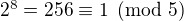, but .
Recall the quotient-remainder theorem: if , then any integer
can be expressed as 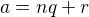, where . In the
language of modular arithmetic this means that . So if , then every integer is congruent to a number
between 0 and (inclusive). So there "are only different
numbers" when working modulo . This can be used to prove many
statements about the natural numbers.
Proposition. For every integer , 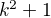 is not divisible by 3.
Proof. Translating this problem to modular arithmetic, we have to
show that or in other words that
for all . By the quotient-remainder
theorem, we know that is either congruent to 0, 1 or 2,
modulo 3. In the first case, . In the
second case, , and in the last case
we have . In all of those cases,
 . So is never divisible by 3.
. So is never divisible by 3.
Proposition. For all integers and , is not
divisible by 4.
Proof. We first compute the squares modulo 4. We compute
Since every number is congruent to 0, 1, 2 or 3 modulo 4, we know that every square is congruent to 0 or 1 modulo 4. This means that there are only four possibilities for . It can be congruent to , , or . In all those cases, Hence , proving the proposition.
Recall that we warned you about dividing in modular arithmetic. This
doesn't always work, but often it does. For example, suppose we want
to solve . We cannot solve this by saying that
, because we cannot work with fractions in
modular arithmetic. However, we can still solve it by multiplying
both sides with 3. Then we get 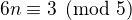, and since
 we get . So instead of
dividing by 2 we could multiply by 3 to get the answer. The reason
this worked is because .
we get . So instead of
dividing by 2 we could multiply by 3 to get the answer. The reason
this worked is because .
Definition. Let and be integers. A multiplicative inverse
of modulo is an integer such that  .
.
For example, 3 is a multiplicative inverse of 5 modulo 7, since
. But has no multiplicative inverse
modulo 6. Indeed, suppose that , then . However, is odd, and cannot be divisible by an even
number. We can use multiplicative inverses to solve equations. If we
want to solve 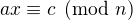 for  and we know that is a
multiplicative inverse of , the solution is
which we can see by multiplying both sides by .
and we know that is a
multiplicative inverse of , the solution is
which we can see by multiplying both sides by .
Lemma Let and be integers. has at most one
multiplicative inverse modulo . That is, if and are both
multiplicative inverses of modulo , then .
Proof. Suppose that . Then we can compute in two ways: .
Proposition. Let and be integers. has a multiplicative
inverse modulo if and only if and are coprime.
Proof. Suppose is a multiplicative inverse of modulo
. Then . Let . Since we
have . But since is a divisor of , we have . Since we have . Hence and
are coprime.
On the other hand, suppose that and are coprime. By Bézout's
Lemma we know that there are integers and such that
. We can rewrite this to , hence
, which means by definition . This means that is a multiplicative inverse of
modulo .
Note that if is a prime number and is a integer not divisible
by , then and are coprime, hence has a multiplicative
inverse.
19.5 Properties of Squares
Mathematicians from ancient times have been interested in the question
as to which integers can be written as a sum of two squares. For
example, we can write , ,  . If we make a sufficiently long list of these, an interesting
pattern emerges: if two numbers can be written as a sum of two
squares, then so can their product. For example, , and
we can write
. If we make a sufficiently long list of these, an interesting
pattern emerges: if two numbers can be written as a sum of two
squares, then so can their product. For example, , and
we can write  . Or
. Or  , and we can write
.
, and we can write
.
At first, one might wonder whether this is just a coincidence. The following provides a proof of the fact that it is not.
Theorem. Let and  be any two integers. If and are
both sums of two squares, then so is .
be any two integers. If and are
both sums of two squares, then so is .
Proof. Suppose , and suppose . I claim that
To show this, notice that on the one hand we have
On the other hand, we have
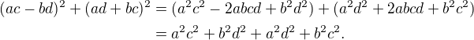
Up to the order of summands, the two right-hand sides are the same.
We will now prove that is not a fraction of two integers.
Theorem. There are no integers and such that .
Proof. Suppose that for some integers and
. By canceling common factors, we may assume that and are
coprime. By squaring both sides, we get , and
multiplying both sides by  gives
gives  . Since is
even, we know that
. Since is
even, we know that  is even, and since odd squares are odd, we
conclude that is even. Hence we can write
is even, and since odd squares are odd, we
conclude that is even. Hence we can write  for some
integer . This means that , hence . The same
reasoning shows that is even. But we assumed that and are
coprime, which contradicts the fact that they are both even.
for some
integer . This means that , hence . The same
reasoning shows that is even. But we assumed that and are
coprime, which contradicts the fact that they are both even.
Hence there are no integers and such that .
19.6 Exercises
- Prove the following properties about divisibility (for any
integers , and ):
- if and then 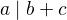 and ;
- if then ;
- ;
- if then
 ;
; - if then the statements and are equivalent;
- if and then 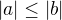.
- Prove that for any integer ,
 leaves a remainder of 0 or 1
when you divide it by 4. Conclude that is never divisible
by 4.
leaves a remainder of 0 or 1
when you divide it by 4. Conclude that is never divisible
by 4. - Prove that if is odd, is divisible by 8.
- Prove that if and are odd, then is even but not
divisible by 4.
- Say that two integers "have the same parity" if they are both even
or both odd. Prove that if and are any two integers, then
and have the same parity.
- Write 11160 as product of primes.
- List all the divisors of 42 and 198, and find the greatest common divisor by looking at the largest number in both lists. Also compute the greatest common divisor of the numbers by the Euclidean Algorithm.
- Compute ,
 and
and - Show by induction on that for every pair of integers and
, divides
 . (Hint: in the induction step,
write as
. (Hint: in the induction step,
write as  .)
.) - Compute . Use this to compute .
- Find the last digit of . Can you also find the last two digits of this number?
- Prove that is divisible by 7.
- Check whether the following multiplicative inverses exist, and if
so, find them.
- The multiplicative inverse of 5 modulo 7;
- The multiplicative inverse of 17 modulo 21;
- The multiplicative inverse of 4 modulo 14;
- The multiplicative inverse of modulo 9.
- Find all integers such that .
- Show that for every integer the number is congruent to 0
or 1 modulo 5. Hint: to simplify the computation, use that
.
- Prove that the equation has no solutions in the integers. (Hint: use the previous exercise.)
- Suppose is a prime number such that . Show that if
then .
- Let , and be given integers. Use Bézout's Lemma to
prove that the equation has a solution for integers
and if and only if .
- Suppose that and and let
 . Prove that . Conclude that for any two integers and with greatest
common divisor the numbers and are
coprime.
. Prove that . Conclude that for any two integers and with greatest
common divisor the numbers and are
coprime.